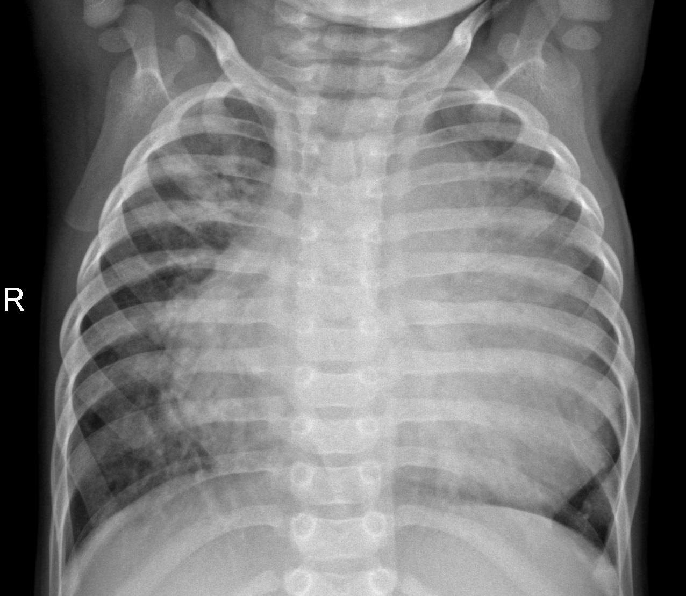

Pneumonia Detection from X-Ray Scans
Role: ML Engineer, API Developer
Trained a CNN using TensorFlow and ResNet architecture to classify chest X-rays as Pneumonia or Normal. Deployed as a Flask API for real-time medical inference.
TensorFlow • ResNet • Flask • OpenCV